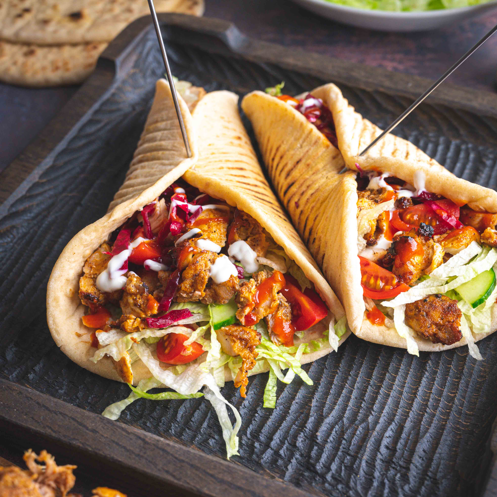

Shawarma recipe

Shawarma
Shawarma is a Middle Eastern dish that originated in the Levant region of the Arab world during the Ottoman Empire,
consisting of meat cut into thin slices, packed in a cone-like bread,
and roasted on a slowly rotating vertical rotisserie or spit
Ingredients
- Flat bread
- Carrot
- Chicken breast
- Mayonnaise
- Sausage
- Spices
- Ketchup
- Onion
- Cabbage
Steps
- Cut the chicken into sizes and soak it in seasoned mixture to taste
- Add 3 table spoons of groundnut oil to a pan and fry the chicken on low heat
- Add the sausage and keep stirring till it’s fully cooked
- Cut the cabbage and carrot
- Mix the mayonnaise and ketchup together in a bowl and add some of it to the cabbage and carrot
- Get your flat bread, lay over it the cabbage and carrot mixture then the chicken and sausage and then finally the pepper sauce
- Scoop on the mayonnaise and ketchup on it and roll the wrap gently
- Put it on a shawarma pressing machine and press it for three to five minutes
- Serve with a very chilled drink